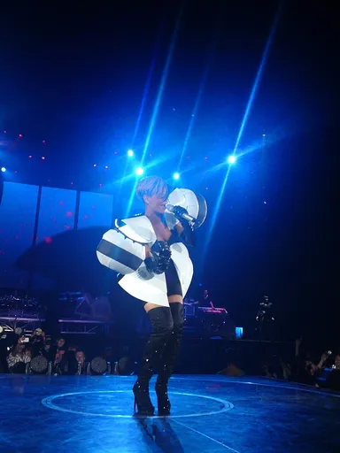
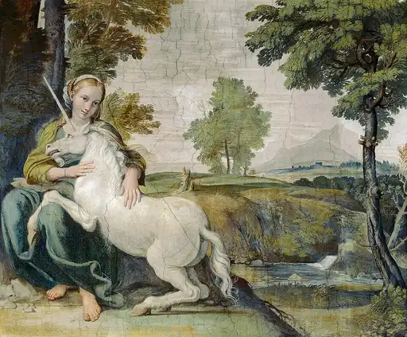
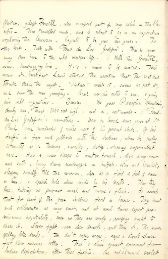
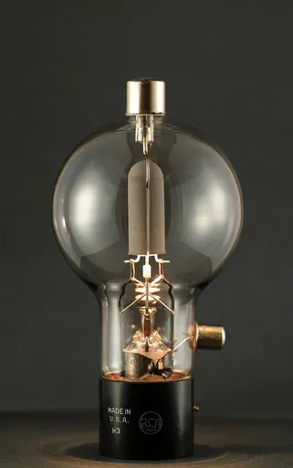

Reject an image by adding its slug to public/charades/charades-easy/reject.txt (append ! to keep it word-only), then re-run node scripts/genimages.mjs.

Umbrella umbrella CC BY-SA 3.0 · Noble Monrose · source

Unicorn unicorn Public domain · Domenichino · source

Unwrapping a present unwrapping-a-present Public domain · Gunn, Thomas Butler, 1826-1903 · source

Vacuuming vacuuming Public domain · 池田正樹 (talk)masaki ikeda · source